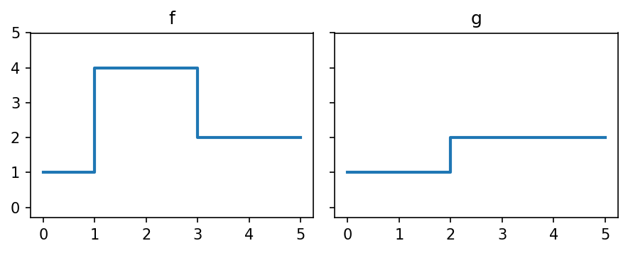
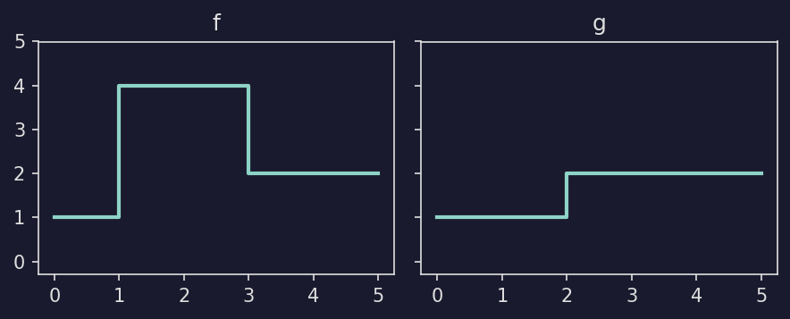
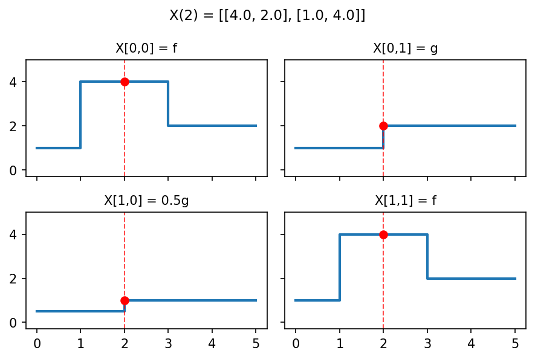
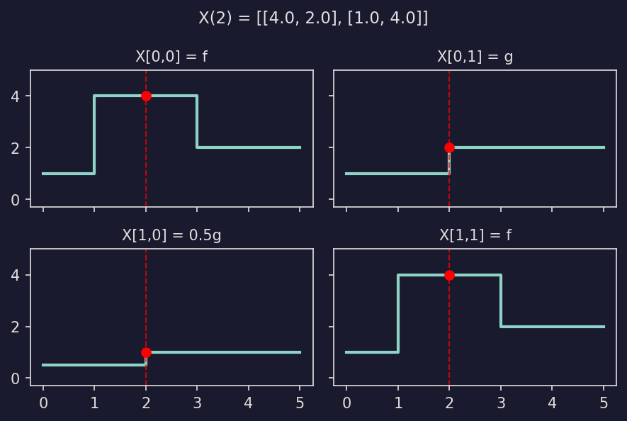
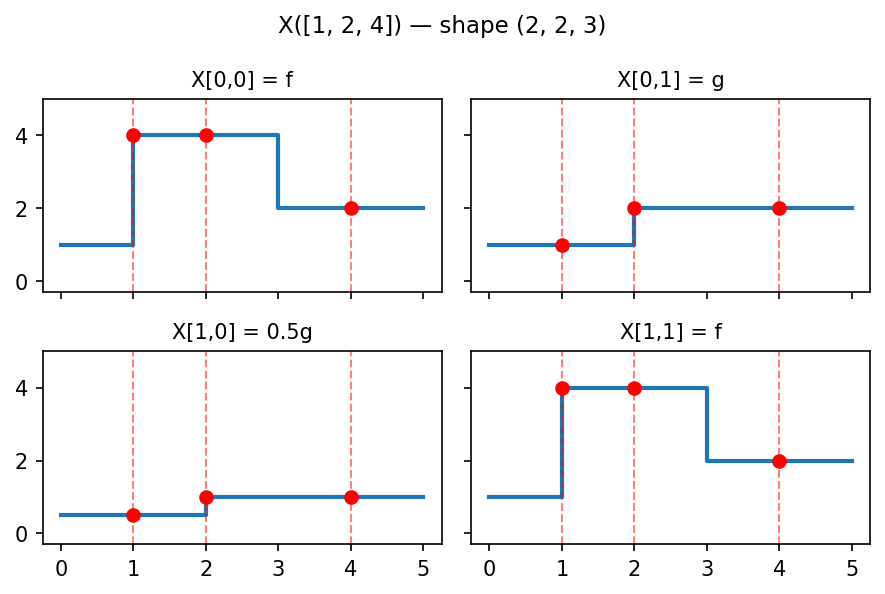
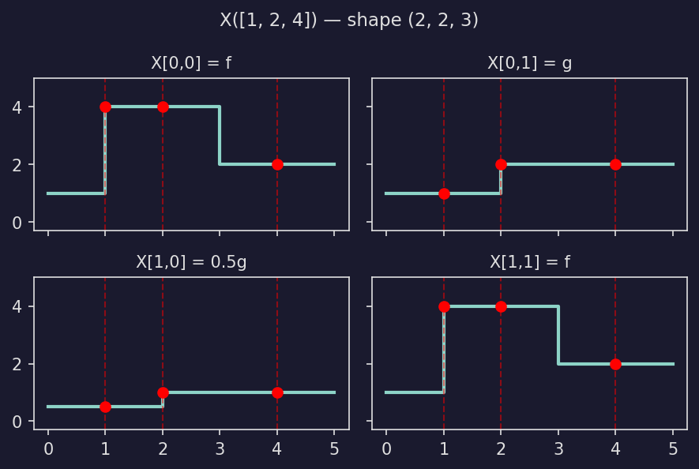
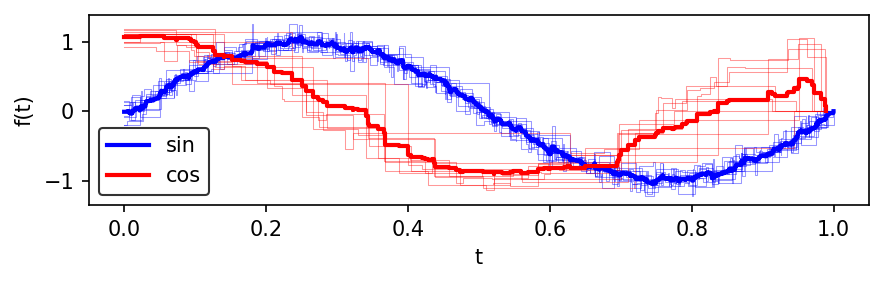
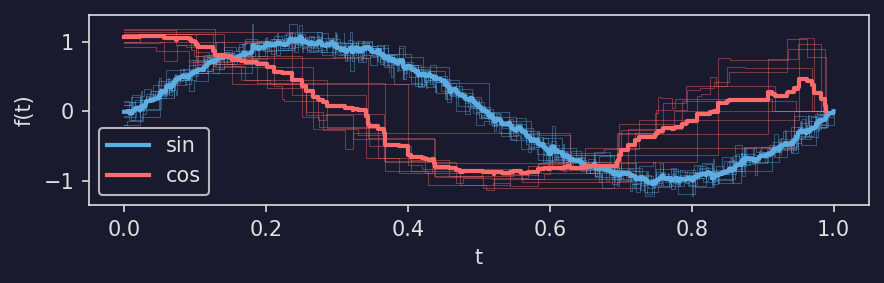

Evaluation & Reductions#
Evaluation#
PCF tensors are callable — every element can be evaluated at one or more times in a single call.
Consider a small example with two PCFs:
import numpy as np
import stablebear as sb
# f(t) = 1 on [0,1), 4 on [1,3), 2 on [3,inf)
f = sb.Pcf(np.array([[0, 1], [1, 4], [3, 2]], dtype=np.float32))
# g(t) = 1 on [0,2), 2 on [2,inf)
g = sb.Pcf(np.array([[0, 1], [2, 2]], dtype=np.float32))




Show plotting code
def plot_pcf_definitions():
fig, (ax_f, ax_g) = plt.subplots(1, 2, figsize=(6, 2.5),
sharex=True, sharey=True)
plotpcf(f, ax=ax_f, max_time=5, linewidth=2)
ax_f.set_title("f")
ax_f.set_ylim(-0.3, 5)
plotpcf(g, ax=ax_g, max_time=5, linewidth=2)
ax_g.set_title("g")
ax_g.set_ylim(-0.3, 5)
fig.tight_layout()
return fig
Arrange them in a 2x2 tensor:
X = sb.zeros((2, 2))
X[0, 0] = f
X[0, 1] = g
X[1, 0] = 0.5 * g
X[1, 1] = f
Scalar evaluation#
Pass a single number to get one value per PCF. The result is a NumPy array with the same shape as the tensor:
X(2)
# array([[4., 2.],
# [1., 4.]], dtype=float32)




Show plotting code
def plot_tensor_eval_example():
t_eval = 2
fig, axes = plt.subplots(2, 2, figsize=(6, 4), sharex=True, sharey=True)
for ax, pcf, label in [
(axes[0, 0], f, "X[0,0] = f"),
(axes[0, 1], g, "X[0,1] = g"),
(axes[1, 0], 0.5 * g, "X[1,0] = 0.5g"),
(axes[1, 1], f, "X[1,1] = f"),
]:
plotpcf(pcf, ax=ax, max_time=5, linewidth=2)
val = pcf(t_eval)
ax.axvline(t_eval, color="red", linestyle="--", linewidth=1, alpha=0.7)
ax.plot(t_eval, val, "ro", markersize=6, zorder=5)
ax.set_title(label, fontsize=10)
ax.set_ylim(-0.3, 5)
fig.suptitle(f"X({t_eval}) = {X(t_eval).tolist()}", fontsize=11)
fig.tight_layout()
return fig
Array evaluation#
Pass an array of times to evaluate every PCF at every time. The time dimensions are appended to the tensor shape:
times = np.array([1, 2, 4], dtype=np.float32)
X(times)
# shape (2, 2, 3) -- tensor shape (2,2) + times shape (3,)
# array([[[4. , 4. , 2. ],
# [1. , 2. , 2. ]],
# [[0.5, 1. , 1. ],
# [4. , 4. , 2. ]]], dtype=float32)




Show plotting code
def plot_tensor_eval_array():
times = [1, 2, 4]
fig, axes = plt.subplots(2, 2, figsize=(6, 4), sharex=True, sharey=True)
for ax, pcf, label in [
(axes[0, 0], f, "X[0,0] = f"),
(axes[0, 1], g, "X[0,1] = g"),
(axes[1, 0], 0.5 * g, "X[1,0] = 0.5g"),
(axes[1, 1], f, "X[1,1] = f"),
]:
plotpcf(pcf, ax=ax, max_time=5, linewidth=2)
for t in times:
val = pcf(t)
ax.axvline(t, color="red", linestyle="--", linewidth=1, alpha=0.5)
ax.plot(t, val, "ro", markersize=6, zorder=5)
ax.set_title(label, fontsize=10)
ax.set_ylim(-0.3, 5)
fig.suptitle(f"X({times}) — shape (2, 2, 3)", fontsize=11)
fig.tight_layout()
return fig
Multi-dimensional time arrays work too:
t2d = np.array([[1, 2],
[3, 4]], dtype=np.float32)
X(t2d).shape # (2, 2, 2, 2) -- tensor shape + times shape
Lists are converted to NumPy arrays internally:
X([1, 2, 4]) # same as X(np.array([1, 2, 4]))
Float tensor evaluation#
Passing a FloatTensor
returns a tensor of the same type:
t = sb.FloatTensor(np.array([1, 2, 4], dtype=np.float32))
result = X(t) # returns a FloatTensor of shape (2, 2, 3)
Time complexity#
The input times do not need to be sorted. When evaluating at multiple times, the library automatically sorts them so that the breakpoints can be scanned in a single linear pass, then maps the results back to the original order.
Note
Let \(n\) denote the number of breakpoints in a PCF and \(m\) the number of query times.
Single PCF, single time: \(O(\log n)\) (binary search).
Single PCF, m times: \(O(m \log m + m + n)\). The query times are sorted in \(O(m \log m)\), then a single linear scan advances two pointers – one through the \(m\) sorted times, one through the \(n\) breakpoints – giving \(O(m + n)\).
Tensor of N PCFs, m times: \(O(m \log m + N(m + n))\). The sort happens once; each PCF is scanned in \(O(m + n)\).
Here \(n\) denotes the average number of breakpoints when PCFs have different sizes.
Reductions#
Reductions collapse a tensor along a specified dimension. The dim parameter
selects which axis to reduce over: every “slice” along that axis is combined
into a single output value.
How dim works#
Consider a 2-D tensor A of shape (m, n):
A = [ [ A[0,0] A[0,1] ... A[0,n-1] ], shape (m, n)
[ A[1,0] A[1,1] ... A[1,n-1] ],
...
[ A[m-1,0] A[m-1,1] ... A[m-1,n-1] ] ]
Reducing along dim=0 (the row axis) combines elements that share the same
column index. For each column j, the elements A[0,j], A[1,j], ...,
A[m-1,j] are reduced together. The result has shape (n,):
# result[j] = reduce(A[0,j], A[1,j], ..., A[m-1,j])
result = sb.mean(A, dim=0) # shape (n,)
Reducing along dim=1 (the column axis) combines elements that share the same
row index. For each row i, the elements A[i,0], A[i,1], ..., A[i,n-1]
are reduced together. The result has shape (m,):
# result[i] = reduce(A[i,0], A[i,1], ..., A[i,n-1])
result = sb.mean(A, dim=1) # shape (m,)
In general, for a tensor of shape (d_0, d_1, ..., d_k), reducing along
dim=j produces a result of shape (d_0, ..., d_{j-1}, d_{j+1}, ..., d_k)
– the j-th dimension is removed, and each position in the output
corresponds to the reduction of all elements along that axis.
Reductions return tensors. Reducing a one-dimensional tensor produces shape
(1,); use result[0] to access the single PCF or numeric value.
dim follows NumPy axis conventions: it may be negative to count from the
last axis (dim=-1 is the last axis, dim=-2 the second-to-last). For a
k-dimensional tensor the valid values are -k through k - 1; an
out-of-range dim raises IndexError.
sum#
sum() adds PCFs pointwise along a dimension:
total = sb.sum(X, dim=0)
mean#
mean() computes the pointwise average of PCFs along a dimension:
import stablebear as sb
from stablebear.random import noisy_sin
X = noisy_sin((50,), n_points=100)
# Average all 50 functions into a tensor of shape (1,)
avg = sb.mean(X, dim=0)
For a higher-dimensional tensor, the specified dimension is collapsed:
A = sb.zeros((3, 100))
# ... fill A ...
# Average across dim=1: result has shape (3,)
row_means = sb.mean(A, dim=1)
# Average across dim=0: result has shape (100,)
col_means = sb.mean(A, dim=0)
max_time#
max_time() finds the maximum time value (the rightmost breakpoint) across PCFs along a dimension:
t_max = sb.max_time(X, dim=0)
The result is a numeric value (or numeric tensor), not a PCF. This is useful for aligning PCFs for plotting or further analysis.
Combining it all#
Here is a complete example that creates a tensor of noisy sine and cosine functions, computes their means, and plots the result:
import stablebear as sb
from stablebear.random import noisy_sin, noisy_cos
from stablebear.plotting import plot as plotpcf
import matplotlib.pyplot as plt
def plot_combining_example(sin_color="b", cos_color="r"):
M = 10
A = sb.zeros((2, M))
A[0, :] = noisy_sin((M,), n_points=100)
A[1, :] = noisy_cos((M,), n_points=15)
fig, ax = plt.subplots(figsize=(6, 2))
# Plot individual noisy functions
plotpcf(A[0, :], ax=ax, color=sin_color, linewidth=0.5, alpha=0.4)
plotpcf(A[1, :], ax=ax, color=cos_color, linewidth=0.5, alpha=0.4)
# Compute and plot means
Aavg = sb.mean(A, dim=1)
plotpcf(Aavg[0], ax=ax, color=sin_color, linewidth=2, label="sin")
plotpcf(Aavg[1], ax=ax, color=cos_color, linewidth=2, label="cos")
ax.set_xlabel("t")
ax.set_ylabel("f(t)")
ax.legend()
fig.tight_layout()
return fig



